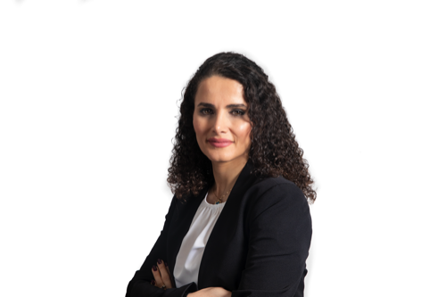

|
Fatemeh Shiri I'm a Research Fellow at Monash University in Australia, working with A/Prof. Yuan-Fang Li and Prof. Reza Haffari in the Vision and Language discipline group. I was a Sessional Lecturer and Research Fellow at Deakin University before commencing at Monash University. I obtained my PhD in Computer Science from the Australian National University and Data61-CSIRO in 2020, under the supervision of Prof. Richard Hartley and Prof. Fatih Porikli, and Dr. Piotr Konisuz. My research interests lie at the intersection of natural language processing, computer vision, and deep learning. Currently, my research aims to leverage Generative AI models for multimodal information extraction and knowledge base construction. |
 |
{kind=link}
ResearchI'm interested in Multilingual and Multi-domain Information/Event Extraction, Automatic Knowledge base Construction, Visual QA, and LLMs' Certified CoT Reasoning with Knowledge Graphs. Most of my research is about information extraction from unstructured data. |
|
|
Can We See More? Joint Frontalization and Hallucination of Unaligned Tiny Faces
Xin Yu, Fatez, Fatemeh SHiri, Bernard Ghanem, Fatih Porikli TPAMI, 2019 Abstract We produce state-of-the-art contours, regions and object candidates, and we compute normalized-cuts eigenvectors 20× faster. |